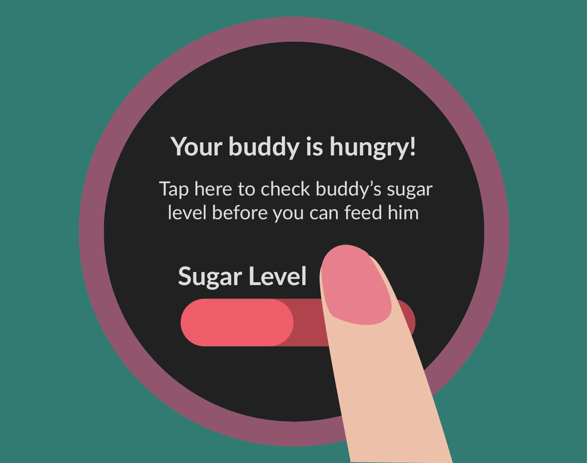
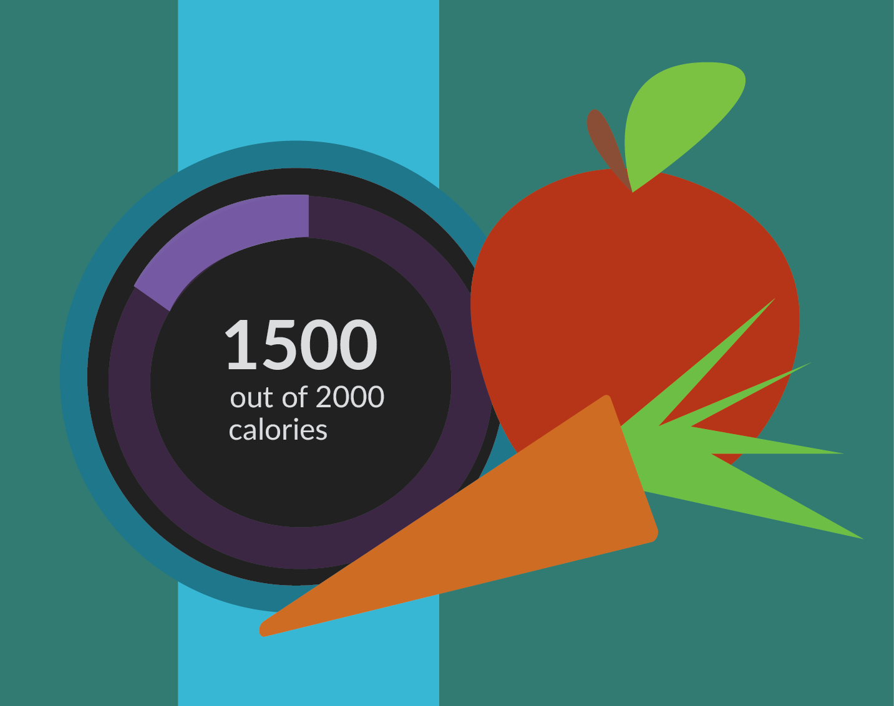
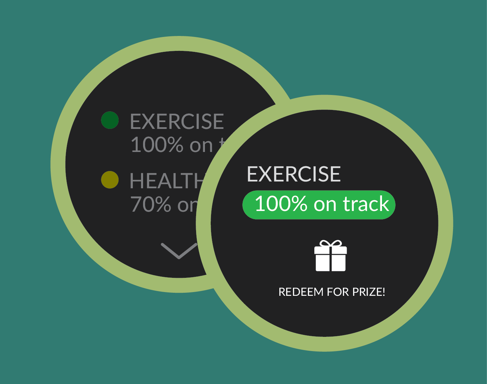

Codi Wants to Help
Kids with Type 1 diabetes need
to carefully monitor their activity
and glucose levels in order to balance
physical exertion with food intake.
Codi helps kids develop habits
of tracking their diet and how to
respond to blood sugar changes.
Watch and learn how Codi works!
With Codi YOU Can



Encourage your child to take a personal investment in eating right with interactive characters that mirror your child's food intake.
Use qualitative data from Codi to help your child understand the different aspects of nutrition and how to better monitor blood sugar levels.
Reward your child for eating right
and exercising to promote good and long
lasting healthy habits for years to come.
and exercising to promote good and long
lasting healthy habits for years to come.